Einbindung von VR in Unity
Benötigte Vorkenntnisse
Ziele
- Verwendung von VR Hardware zur Steuerung der Kamera
- Ausführung des Projektes auf dem VR Headset
Anleitung
- Öffne oder erstelle ein Unity Projekt
- Steam VR Plugin aus dem Asset Store herunterladen
- Öffne den Asset Store mit Window -> Asset Store
- Suche im Asset Store nach „SteamVR Plugin“ und wähle dieses aus 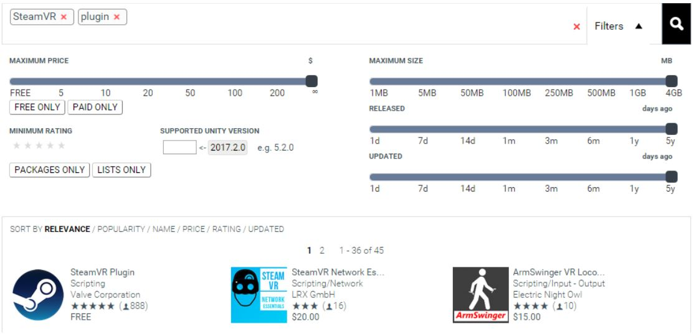
- Klicke auf Download und lade das Plugin herunter
- Klicke im folgenden Dialog auf „All“ und anschliessend auf „Import“ 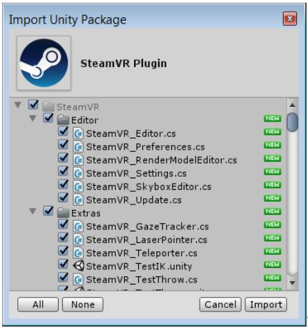
- Im Dialogfeld „SteamVR_Settings“, klicke auf „Accept All“ 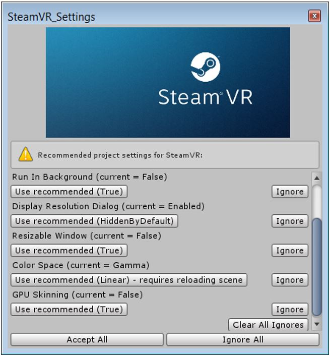
- Klicke im Popup-Fenster auf "Ok" 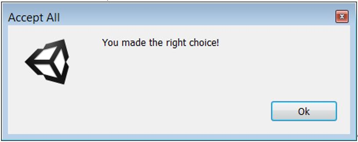
- Das Plugin ist nun im „Project“-Fenster von Unity als Unterordner von „Assets“ sichtbar 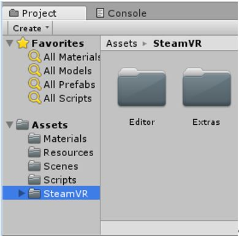
- Wähle [CameraRig] und [SteamVR] im Ordner „Prefabs“ des heruntergeladenen Plugins aus 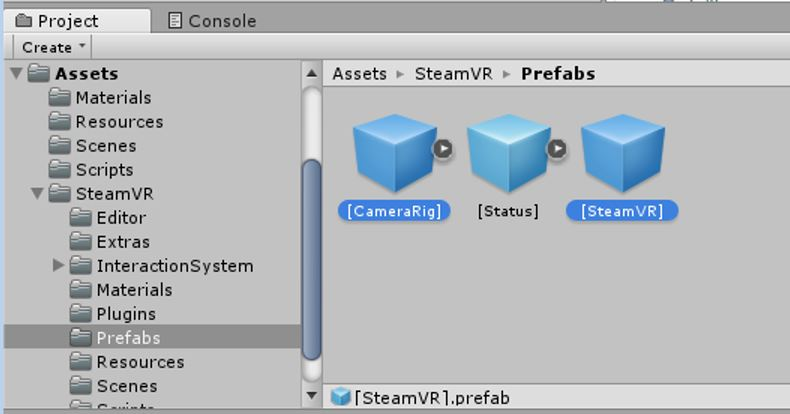
- Ziehe die beiden selektierten Elemente in das „Hierarchy“ Fenster von Unity.
- Selektiere die Main Camera im Hierarchy-Fenster und drücke die Delete Taste um diese zu löschen. Dies ist notwendig, da es sonst zu Kompatibilitätsproblemen kommt.

Referenzen
https://www.raywenderlich.com/149239/htc-vive-tutorial-unity (01.11.2017)Verwendung von GIT mit Unity
Benötigte Vorkenntnisse
- Grundlagen Verwendung von Versionskontrollsystemen
- Grundlagen Verwendung GIT über Shell
- Grundlagen Verwendung Unity
- Verwendung Gitlab
Ziele
- Verwaltung eines Unity-Projektes in GIT
Anleitung
- Erstellung eines neuen Repository
Grundsätzlich ist jede Plattform welche GIT anbietet geeignet, in diesem Tutorial verwenden wir Gitlab. Dies da so momentan die Schulprojekte betreut werden. - Bei der Gitlab-Plattform mit deinem Benutzer anmelden 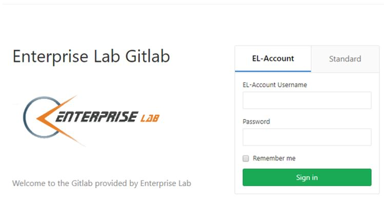
- Anschliessend unter «Your Projects» den Punkt «New Project» wählen 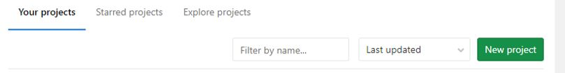
- Die Standard-Einstellungen so belassen und nur den Projekt-Namen im Feld «Project Name» auf den gewünschten Namen anpassen. Anschliessend auf «Create project» klicken 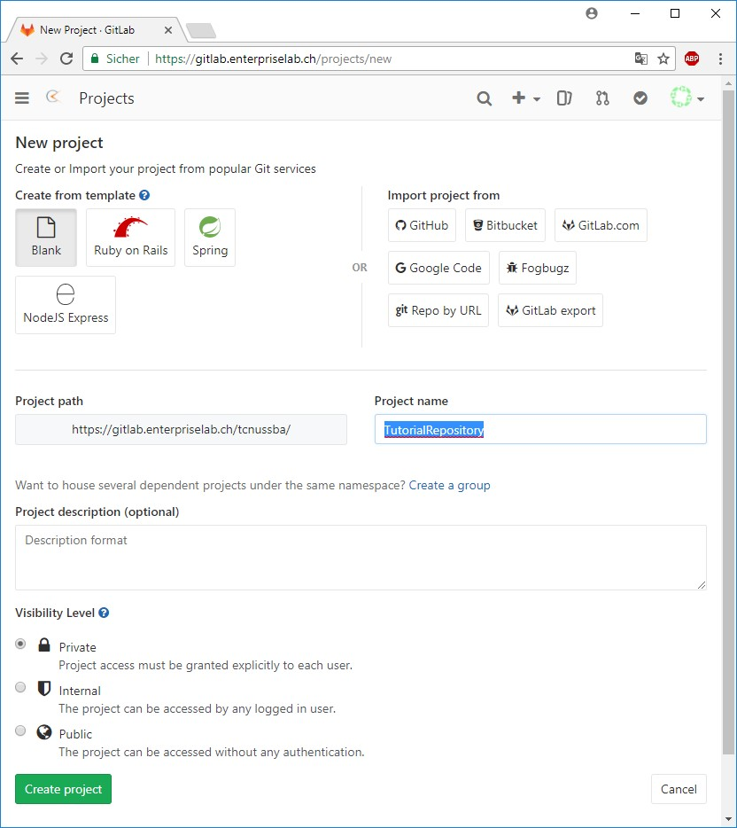
- Initialisierung des Projektes
- Im neu erstellten Repository die URL wie folgt kopieren 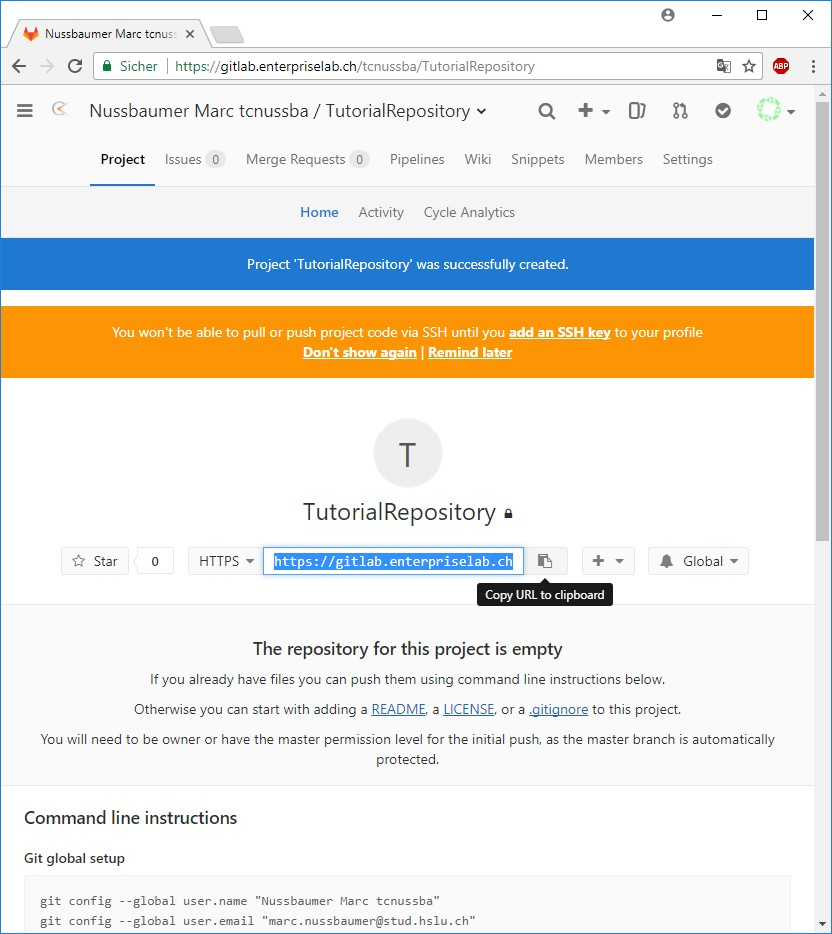
- Anschliessen die Git Bash Konsole im Ordner öffnen, in welchem das Projekt später liegen soll 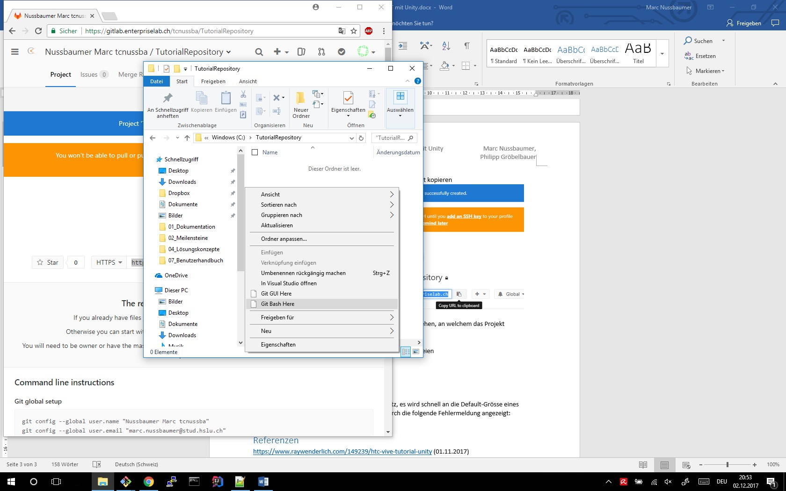
- Anschliessend das leere Repository herunterladen per: 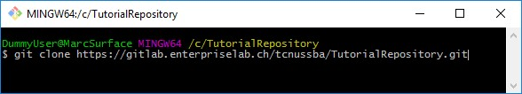
- Erstelle oder Kopiere ein Unity-Projekt in den neu erstellten Ordner
- Öffne die Editor-Settings des Projektes 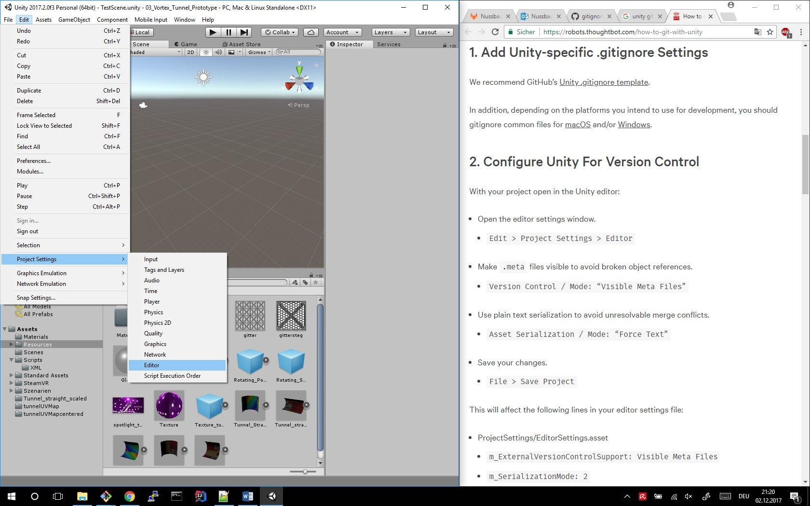
- Setze unter «Version» den «Mode» auf «Visible Meta Files» und unter «Asset Serialization» den «Mode» auf «Force Text». Dies ist notwendig, damit Unity diese Änderungen nicht in notwendigen Projektdateien anpasst und somit zu Versionskonflikten führt. 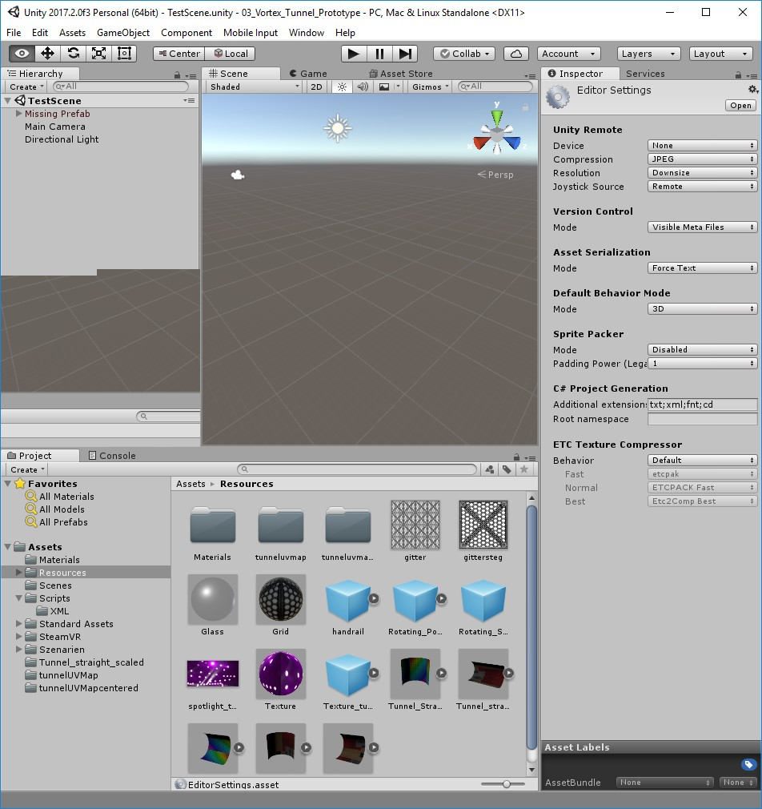
- Erstellung einer .gitignore-Datei für Unity-Projektdateien
- Erstelle eine Text-Datei mit Namen gitignore.txt
- Kopiere folgenden Inhalt in diese Textdatei
- Benenne die Datei zu «.gitignore.» um. Ja Punkt-gitignore-Punkt, dadurch wird die Datei zu «.gitignore» - Windows ist hier komisch.
- Upload von Änderungen:
- Im Ordner die Git-Bash öffnen und folgende Befehle eingeben, wobei «Erster Commit» eine beliebige Nachricht für den Commit sein kann 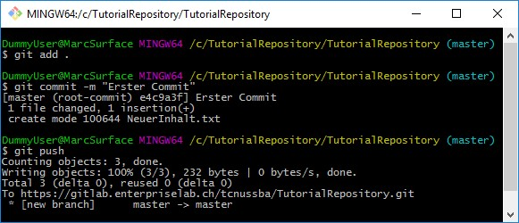
[Ll]ibrary/
[Tt]emp/
[Oo]bj/
[Bb]uild/
[Bb]uilds/
Assets/AssetStoreTools*
# Visual Studio 2015 cache directory
.vs/
# Autogenerated VS/MD/Consulo solution and project files
ExportedObj/
.consulo/
*.csproj
*.unityproj
*.sln
*.suo
*.tmp
*.user
*.userprefs
*.pidb
*.booproj
*.svd
*.pdb
Physics2DSettings.asset
DynamicsManager.asset
# Unity3D generated meta files
*.pidb.meta
# Unity3D Generated File On Crash Reports
sysinfo.txt
# Builds
*.apk
*.unitypackage
Mögliche Stolpersteine
- Unity-Projekte benötigen viel Speicherplatz, es wird schnell an die Default-Grösse eines Gitlab-Repository gestossen. Dies wird durch die folgende Fehlermeldung angezeigt: error: unpack failed: unable to create temporary object directory To https://gitlab.enterpriselab.ch/tcnussba/pawi-vortext-tunnel.git ! [remote rejected] master -> master (unpacker error)
- Falls die .gitignore-Datei nicht verwendet wird so gibt es bei jedem Push eines anderen Benutzers ein Konflikt. Dies passiert weil Unity sehr viele temporäre lokale Dateien erzeugt.
- Sind die Editor-Settings nicht wie im Tutorial beschrieben gesetzt so ändert Unity Projekt-Assets was zu Konflikten führt beim Push/Pull.
Referenzen
https://github.com/github/gitignore/blob/master/Unity.gitignore (02.12.2017)https://robots.thoughtbot.com/how-to-git-with-unity (02.12.2017)
Lesen einer XML-Datei mit Unity
Benötigte Vorkenntnisse
Ziele
Anleitung
Referenzen
https://www.raywenderlich.com/149239/htc-vive-tutorial-unity (01.11.2017)Importieren externen Assets in Unity
add tutorial here
Erstellung und Verwendung von Prefabs in Unity
add tutorial here